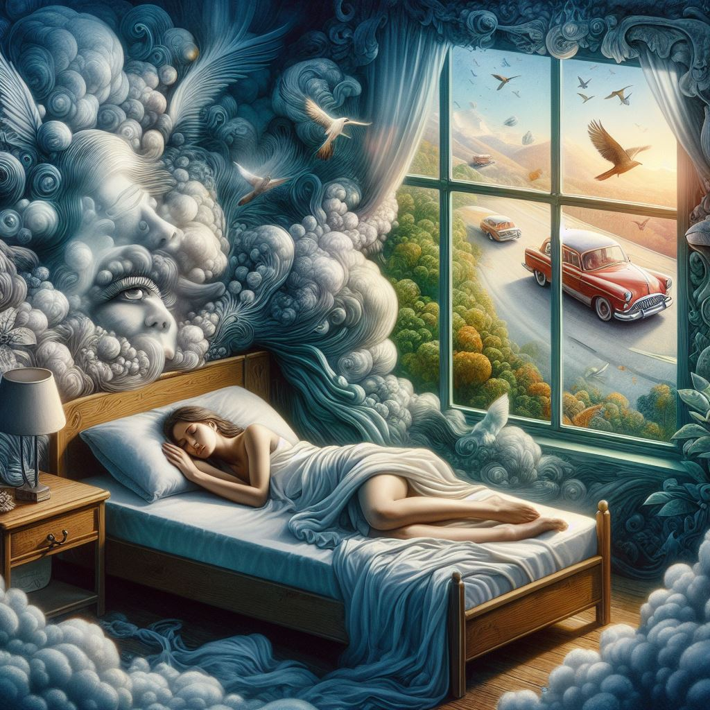

暗夜詭影﹔靈魂共鳴
深夜，蕾雅穿越詭異的世界，古老的森林中彌漫著迷霧。她聽見悉悉索索的聲音，仿佛無數雙眼睛在觀察著她。走著走著，她遭遇到一群模糊的人影，他們身上散發出陰森的氛圍，讓她的心跳不安。
進入古老廢墟後，蕾雅感受到一陣陰風，伴隨著淡淡的腥臭。突然，一道幽暗的身影出現，掌控著一群詭異的惡靈。她難以辨認出這影子的真面目，只感受到一股無形的恐懼，像是來自古老墓穴的冷意。
同時，艾倫在一條沉寂的街道上徘徊，普通建築中散發著令人毛骨悚然的氛圍。進入一座古老屋子，每一步都伴隨地板的呻吟聲。在一扇生銹的門後，他發現了被遺忘的實驗室，一片淒涼的場景使他不寒而慄。
深入城堡，兩人感受到死靈的呼喚。城堡深處有一扇通往現實世界的門，但門前有一位陰影模糊的守衛。守衛提出了一個艱難的詛咒：只能有一人回到現實，而另一人將永遠困在詭異的世界。
在絕望的選擇中，蕾雅和艾倫深深注視著對方。他們理解了彼此的掙扎，但最終，蕾雅堅定地踏進門口，為艾倫打開回到現實的通道。艾倫目送她的背影，深知這是無法挽回的別離。
蕾雅回到現實，但詭異的世界深深地烙印在她的心中。她感受到那裡的冷意和陰影在夜夢中纏繞著她。而艾倫則留在了永遠的幽暗之地，身影漸行漸遠。
然而，蕾雅回到現實後，發現自己似乎帶著一絲詭異的氛圍。白天她感到無比疲憊，夜晚則充滿奇異的夢境。在夢中，她再次置身於那片古老的森林，面對無數雙注視的眼睛。她開始質疑，她是否真的離開了詭異的世界，還是那個世界已經與她的現實交織在一起。
同時，艾倫在詭異的世界中，發現自己並未像預期的那樣孤獨。他遇到了其他被困在那裡的靈魂，彼此在幽暗中互相支持。然而，他們也深知，這個世界是無盡的循環，每個靈魂都受困於自己的恐懼和選擇。
隨著時光流逝，蕾雅和艾倫的命運仍然交錯著。她在現實中感受到詭異的氛圍，夢中被困在森林裡。而艾倫則與其他靈魂一同徜徉在永恆的暗影中，等待著是否有人能夠破解這個詭異的循環。
這片詭異的森林，似乎是一個通往現實和夢境之間的交界處。
蕾雅在現實中的生活逐漸變得扭曲，日夜間的冷風似乎帶著詭異的低語。她開始在家中感受到一種無形的壓力，夜晚更常被無數雙眼睛的凝視所困擾。每當她打開窗戶，迷霧彷彿也湧入房間，帶來詭異的寂靜。蕾雅逐漸迷失在現實和夢境的交界，無法確定哪裡是真實。
與此同時，艾倫在詭異的世界中結識了更多的靈魂。他們分享著各自的恐懼和故事，彼此成為唯一的支持。然而，他們也發現，每個人都背負著一段無法解開的過去，這使得詭異的循環更加複雜。在幽暗的暗影中，艾倫開始思考是否有可能打破這無盡的困局。
蕾雅的夢境變得越來越詭異，她似乎被引導至一個神祕的祭壇。在夢中，一群模糊的身影圍繞著她，發出令人毛骨悚然的低語。祭壇中央浮現出她和艾倫的身影，而古老的呼喚聲似乎在告訴她，這兩個世界之間的界線已經模糊不清。
同時，現實中的蕾雅漸漸發現身邊的人也被捲入這詭異的氛圍中。她的家人、朋友，甚至是老師和同學，都開始表現出詭異的行為，彷彿被某種力量操控。蕾雅開始懷疑，她的選擇是否影響著周遭的一切，而這可能是一場無法挽回的噩夢。
在詭異的夢境中，艾倫發現了一本古老的書，記載著與該世界相關的神祕儀式。這儀式似乎是將靈魂纏繞在兩個世界之間的鑰匙。然而，為了實現這儀式，艾倫需要尋找一位神秘的導師，而這位導師可能是那扇通往現實的門背後的守衛。
最終，蕾雅和艾倫的命運在夢境和現實之間緊密交織。蕾雅發現自己深陷於一場詭異的陰謀中，她的選擇不僅影響自己，還牽動著整個世界的平衡。她開始領悟，這兩個世界的交界處才是真正的核心，而她和艾倫的存在，不只是單純的靈魂，還承載著某種神秘的力量。
同時，艾倫在詭異的世界裡找到了那位神秘的導師。導師揭示了一個驚人的事實，兩個世界的連結早已超越了他們的理解。詭異的世界並非惡夢，而是一個存在於人類意識深處的次元。這個次元承載著人類集體的恐懼、渴望和選擇，而蕾雅和艾倫成為了這種力量的象徵。
在兩個世界的交匯處，蕾雅和艾倫遭遇到了詭異的守衛，這位守衛化身為一道強烈的光芒。他們理解到，這個守衛代表著人性的選擇，他的存在是兩個世界間平衡的關鍵。守衛提出最後的詛咒：蕾雅和艾倫必須放下彼此，成為各自世界的守護者，以保持平衡。
在深思熟慮後，蕾雅和艾倫接受了守衛的詛咒。他們同時轉身，踏上通向各自世界的道路。蕾雅回到了現實，而艾倫則守護著詭異的次元。然而，兩人的心靈仍然相連，他們彷彿能夠感受到對方的存在，就像是一種超越時空的心靈連結。
上一頁